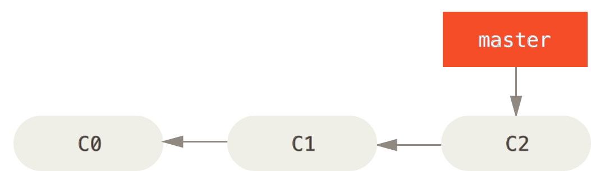
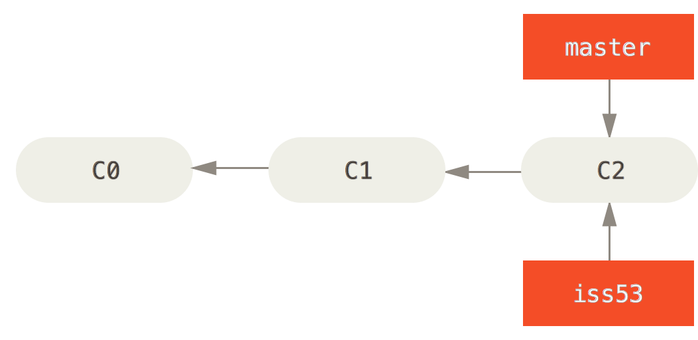

Learning Git
Git Basics
Created by Mazharul Anwar / @mazharul_anwar / mazharul[at]jobstreet[dot]com
Useful Basic Git commands
git initgit clone [repoUrl]git statusgit addgit commitgit loggit remote add origin
Useful Basic Git commands ...
git pushgit branchgit checkout `branchname`git fetchgit pullgit grepgit reset
git init Initialising an empty repo
git clone [repoUrl] Clone a repository from the url. This url can be in ssh, https protocol with any service provider as well.
git status Check the current status of the git repo
git add Adding a file in the repo. Example
git add README.md Adding all untracked files
git add . git commit Commit changes in your local repo. To commit the changes we have just made to our repo :
git commit -a -m 'Your commit msgs' Note: This is your local commit, it doesn't reflect in remote
git log View commit logs
git log I want to view one liner logs for all the commits
git log --oneline View a specific file's log
git log `filename`
Limit the number of commits in log rendering
git log -4 More Info and exmaples on git log
git remote add origin Adding the remote server's repo url , so that we can push and fetch code from there.
git push Pushing your changes. To push your changes to remote's master branch:
git push origin master git branch shows you branches we have in our current repository. Asterisk on the branch points to the active branch you are currently working with.
git branch To create a new branch
git branch branchName Deleting abranch is easy too
git branch -d newImage Note: Creating a branch via this method doesn't switch your working branch to the newly created branch, becareful while commiting.
git checkout Switch to a branch to work with that branch. Also switching to proper branch and merge it accordingly is very important in git.
git checkout newImage We can also create new branch using this methos and switch to the branch after it is created in one command
git checkout -b newImage2
git fetch This command use to fetch all the remote changes , it doesn't merge the remote changes. So you can just look at the remote changes and keep your changes as it is.
git pull This will fetch the remote changes and merge it with your desired branch. careful when you do it though. Do not just simple merge; check the remote changesor the branches you are merging to.
git grep Search for strings in git repository
git grep "functionName()" git reset Reset current state to a specified state.
Undo commits from your current repo permamnently
git reset --hard HEADInterrupted workflow
$ git checkout feature ;# you were working in "feature" branch and
$ work work work ;# got interrupted
$ git commit -a -m "snapshot WIP" (1)
$ git checkout master
$ fix fix fix
$ git commit ;# commit with real log
$ git checkout feature
$ git reset --soft HEAD^ ;# go back to WIP state (2)
$ git reset (3)
More Info and exmaples on git reset
Part 2
Git Branching , Merging and Management
What we know so far about git branching?
$ #creating a new branch
$ git branch newImage
$ #shorthand for creating a new branch and checkout the branch
$ git checkout -b newImage
$ #checkout new branch
$ git checkout newImage
$ #deleting a new branch
$ git branch -d newImage
A very basic workflow with branches
Initial branch status
Create a branch iss53: `$ git checkout -b iss53`
Do some work on it, how does it look now after committing?

Need to work on a hotfix/bugfix urgently ?
$ #make sure you have commit everything on your iss53 branch
$ # checkout master branch
$ git checkout master
$ # create a hotfix branch
$ git checkout -b hotfix
$ # do some work and commit
$ gt commit -a -m 'your commit msg'
How does my graph looks now ?

Now I want to merge my hotfix to master, so that I can deploy the bugfix to live

Everything is good with hotfix, what to do with that branch now ?
$ git branch -d hotfixI want to resume my work on iss53 now
$ git checkout iss53
When we switch branch in git, it shuffles the files, folders and assets to reflect the exact status of that git branch.
Basic Merging
I have finished working with iss53, looks good and tested. What now ?
Merge iss53 with master so that we can test and deploy
$ # checkout to the branch we want to merge
$ # in this case `master` branch
$ # make sure you have committed all the changes in iss53
$ git checkout master
$ # merge the iss53 branch
$ git merge iss53

How about rebasing instead of merging ?
- Great that you know about it.
- This is another very cool command which you can use instead of merge
- We would like to preserve our repo history of what actually happened (git merge) as ooposed to how the project is made.(git rebase)
- Choice for me is simple. `git merge`
Merge conflicts
Homework to read up on this ?
$ #commands you may find interesting while merging conflicts
$ git status
$ git merge
$ git mergetool
Branch Management
$ # command to check branch
$ git branch
$ # Check the last commit on each branch
$ git branch -v
$ # Branches that are not merged
$ git branch --no-merged
$ # Branches that are merged and safe to delete
$ git branch --merged
$ # Force delete a branch and possibly screw things up
$ git branch -D `branchName`
$ # Please never do this. If you have accidentally done it, ask kooipeng!
Gitflow workflow
Our religeious book of rules that we will follow!
The presentation is in powerpoint and can be found here:
Practical work !
- Fork this repo:
- Go to github and open up the repo. Check the issues. These are our features to implement.
- Start working on a feature. [Collaborate]
- Once you think you are done with the feature, send a pull request.
Questions!
References:
- http://git-scm.com/book/en/v2/
- http://git-scm.com/
- Please read that book. It's awesome!